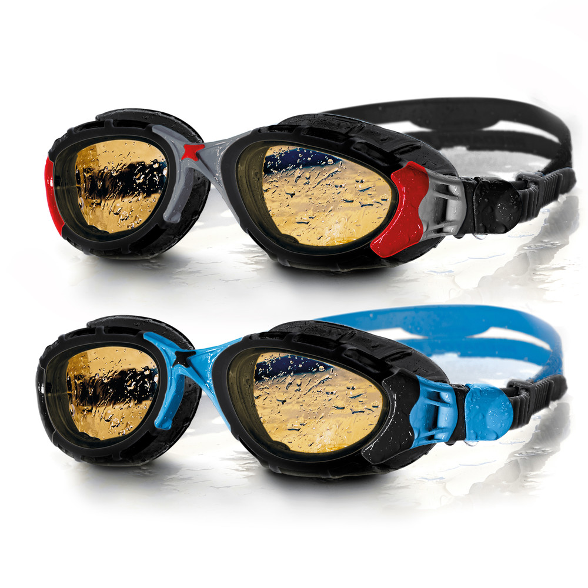
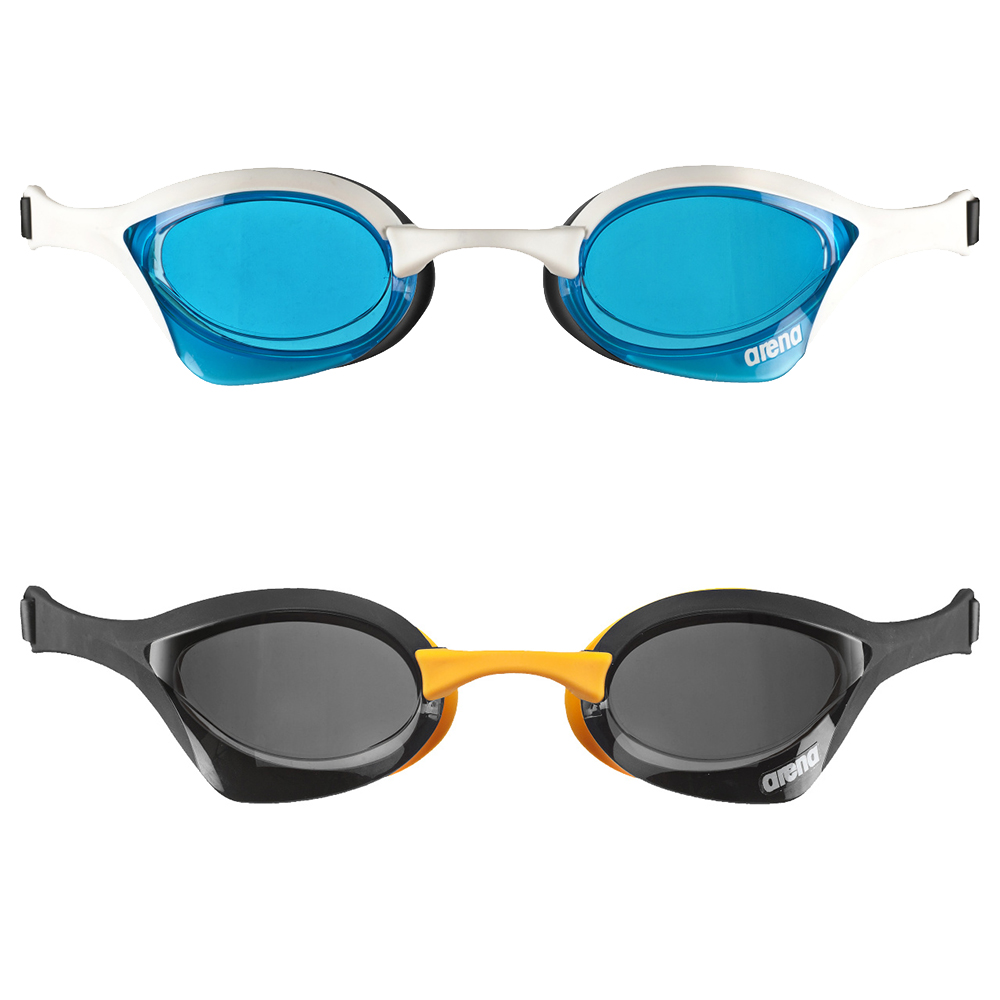

The Swimming Googles Shop
Catalog:

A high quality comfort and construction makes the Zoggs Predator Flex Polarised Ultra Goggle a great choice for any
swimmer wanting to get those training lengths in in the pool. Using a unique 4 flexpoint technology for a more adaptable
fit, these goggles are soft next to the eye yet remain hugely hydrodynamic. FINA approved, these goggles are finished
with an anti-fog treatment, helping you keep clarity.
Zoggs Predator Flex Polarised Ultra Goggle

A race goggle through and through, the Arena Cobra Ultra Goggle offers a super low profile to allow for hydrodynamic
efficiency, this model is the choice of pro swimmers. With interchangeable nose bridges for enhanced fit, a dual split
head strap and a hard mirrored lens, this goggle provides a wider field of view. One size fits all, this FINA approved
goggle is a comfortable and classy speedster.
Arena Cobra Ultra Goggle